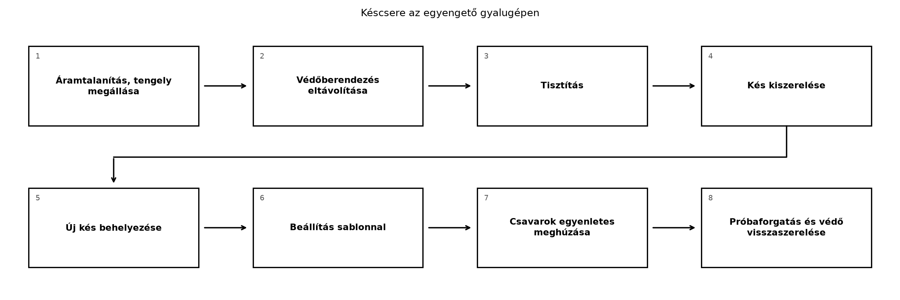
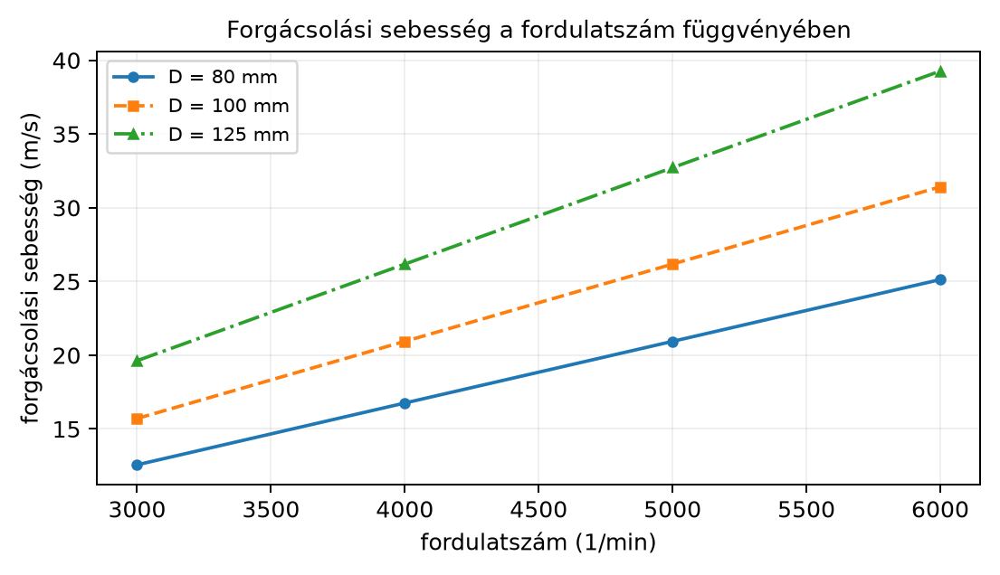

Egy raktár sarkából elővettél egy 800 mm hosszú, 120 mm széles tölgyfa alkatrészt. Szemre szép, de ha lapjára fekteted, billeg: az egyik sarka 2 mm-rel feljebb áll. A vastagsági gyalugép önmagában ettől nem varázsolja síkba a lapot, csak párhuzamos vastagságot készít a már meglévő, hullámos felületből. Előbb az egyengető gyalugépen kell egy valóban sík bázislapot készíteni, majd az arra merőleges bázisélt. Ha ez megvan, csak ezután jöhet a vastagsági gyalugép. Az egyengető gép tehát a teljes keresztmetszeti megmunkálás első, minőséget megalapozó állomása.
Képzelj el egy kb. 2 m hosszú asztalt, amelyet középen két részre oszt a forgó késtengely. A bal oldali felvevő asztal kissé lejjebb van, a jobb oldali leadó asztal pontosan a kések felső élének magasságában. A deszka balról érkezik, a lejjebb lévő asztalról átemeled a kések fölé. A késtengely leforgácsolja a deszka aljából a felesleget, a frissen vágott, sík felület pedig már a magasabb leadó asztalra támaszkodik. A forgácsot elszívó csonk viszi el, a hidas védőburkolat a kézzel szembeni oldalon takarja a szerszámot. Az alábbi ábra a gép felépítését és az asztalok helyes beállítását mutatja.
Az „a” rész a gép fő részeit mutatja: balra a lejjebb állított felvevő asztal (kb. 1200 mm), középen a késtengely, jobbra a leadó asztal (kb. 1000 mm), fölötte a hidas védőburkolat, hátul az ütközővonalzó, alul az elszívócsonk. A „b” részlet (függőlegesen nagyítva) a lényeget mutatja: a leadó asztal a késkör felső érintőjében áll, a felvevő asztal a fogásmélységgel (például 1,5 mm) lejjebb. Az alsó sor a leadó asztal három beállítását veti össze: helyes (sík felület), túl magas (a darab eleje nekiütközik) és túl alacsony (a darab vége a felvevő asztal elhagyásakor lebukik, és a végén mélyebb a fogás). Az interaktív változatban a leadó asztal eltérése és a fogásmélység állítható.
Definíció. Az egyengető gyalugép olyan helyhez kötött faipari gép, amely forgó késtengellyel a munkadarab egyik lapját vagy élét síkba gyalulja. A gép felvevő asztala a szerszám előtti rész, amely a fogásmélységnek megfelelően lejjebb áll; a leadó asztal a szerszám utáni rész, amely a kész felületet támasztja. A két asztal közötti, a kések felső élének magasságában lévő elképzelt vonal a késkör felső érintője.
Szabály. A leadó asztal felső síkját a késkör legmagasabb pontjába, azaz a késél körpályájának érintőjébe kell beállítani. Ha a leadó asztal magasabban van, a munkadarab felfekszik és nem halad; ha alacsonyabban, az alkatrész vége leesik, és a munka nem lesz sík. A felvevő asztal magasságkülönbsége adja a fogásmélységet.
Definíció. A fogásmélység az egy menetben levett forgácsvastagság. Az egyengető gyalulásnál irányítani kell, mert a munkadarabot kézzel vezetjük. Tájékoztató érték: előnagyolásnál 2–3 mm, simító egyengetésnél 0,5–1 mm felvevőasztal-süllyesztés a késkörhöz képest (ellenőrizendő: gépkönyv és a fa fajtája).
Definíció. A késkivetés (késkiemelés) a kés éle és a késtengely palástja közötti sugárirányú túlnyúlás. Kézi előtolású gépeken a kivetést a szerszámgyártó és a szabvány korlátozza (jelölve: MSZ EN 847-1 – kb. 1,1 mm, ellenőrizendő); a beállítósablon ezt az értéket adja. Szögletes (nem biztonsági kivitelű) késtengely kézi előtolású gépen nem használható (ellenőrizendő). Az egyenletes késkivetés biztosítja, hogy a tengely minden kése azonos átmérőjű kört írjon le.
Definíció. A késnyomtáv a késenkénti előtolás: az a távolság, amennyit a munkadarab halad két egymást követő kés vágása között. Képlete ugyanaz, mint az Forgácsolási és előtoló sebesség, fogankénti előtolás alfejezetben tanult fogankénti előtolás. A késnyomtáv határozza meg a felület hullámosságát: minél kisebb, annál finomabb a felület.
Definíció. Az élgyalulás az egyengető gyalugépen az ütközőhöz szorított munkadarab keskeny oldalának merőlegesre gyalulása. A lapgyalulás (egyengetés) a munkadarab széles lapjának síkba gyalulása. A teljes megmunkálás sorrendje a kézi gyalulásnál tanultakkal azonos: bázislap → bázisél → vastagság → szélesség.
Az egyengető gyalugép fő részei:
Szabvány. Az egyengető gyalugépekre a faipari gépek biztonsági szabványai vonatkoznak, az MSZ EN ISO 19085 sorozat megfelelő gyalugépekkel foglalkozó része (pontos szabványszám ellenőrizendő). A gépen CE-jelölés, gyártói adattábla és magyar nyelvű gépkönyv kell legyen. A védőberendezések eltávolítása, a vészleállító megkerülése vagy a gépkönyvben tiltott munkadarab-méretek feldolgozása tilos.
Hagyományos egyenes kések. A leggyakoribb, két-három-négy kést befogadó tengely. A kések gyorsacélból (HSS) vagy keményfémből készülnek. A kést a tengelyben csavarokkal szorítjuk. Egyenletes beállítás esetén jó felületet adnak, de a késprofil nem cserélhető élével együtt.
Cserélhető lapkás tengely. A tengelybe kis, négyzet vagy téglalap alakú, forgatható keményfém lapkákat szerelnek. Ha egy él kopott, a lapkát elforgatják. A beállítás gyors és egyenletes, mert a lapkák geometriai helye gyárilag meghatározott.
Spirálkéses (szegmensélű) tengely. A késeket apró, csavaros lapkákból álló sorok alkotják, a tengely palástján csavarvonalban elhelyezve. A vágás folyamatosabb, a forgácsvastagság kisebb, így halkabb és tisztább a vágás, különösen nehezen gyalulható, hullámos vagy csavarodott rostú fán.
Megjegyzés. A szerszám megengedett legnagyobb fordulatszámát mindig a gyártó jelöli a késen, a lapkán vagy a csomagoláson. A gép névleges fordulatszáma nem lépheti túl ezt az értéket. A szerszámcsere előtt mindig ellenőrizni kell, hogy a kés mérete, késkivetés-tartománya és megengedett fordulatszáma a gépkönyv szerinti.
A késeket tompa él, kitörés, kicsorbulás vagy szerszámcsere miatt cseréljük. A késbeállítás célja: minden kés élének ugyanakkora késkivetést kell adni, hogy a tengely kiegyensúlyozott maradjon. A rosszul beállított kés nem fog, vibrációt, hullámos felületet és balesetveszélyt okoz.
Biztonsági alapszabály. Szerszámcsere, beállítás és tisztítás előtt a gépet áramtalanítani kell, a főkapcsolót kikapcsolni, a vészleállót benyomni, és megvárni, amíg a késtengely teljesen megáll. A gépkönyv szerinti reteszelést alkalmazni kell.
Beállító eszközök: - Beállítósablon: mágnessel vagy talppal a késtengely palástjára helyezhető idom, amely a kés élét a megadott kivetésre emeli. - Mágneses beállító: a kést mágnessel húzza a sablonhoz, így a beállítás gyorsan ellenőrizhető. - Óramérő (mérőóra): a legpontosabb, tájékoztató jelleggel 0,01–0,02 mm különbségen belül ellenőrzi a kések kivetését (ellenőrizendő: gyártói tűrés).
Késcsere lépései (recept):
Diagram.

A képsor a recept lépéseit követi: leválasztás és álló tengely; a késtengely metszete (kés, szorítóléc, szorítócsavarok, horony); a csavarok fokozatos oldása és a kés kivétele; a beállítósablon a palástra téve, a kés éle a sablonhoz emelve; a csavarok egyenletes, fokozatos meghúzása; végül a kézi átforgatás és a leadó asztal ellenőrzése.
Kiegyensúlyozás. A kések egyenlő beállítása nemcsak felületi minőség, hanem biztonsági kérdés is. Ha az egyik kés nagyobb kivetéssel áll, a tengely „üt”: a gép remeg, a csapágyak gyorsabban kopnak, a munkadarab visszarúg, és a szerszám még a befogásból is kilazulhat. A gyakorlatban a kiegyensúlyozást a pontos késbeállítás, a tiszta befogófelület és az egyenlő csavarhúzás biztosítja. A tengely gyári dinamikus kiegyensúlyozása után a késeket csak szakszerűen szabad cserélni.
A biztonságos gyalulás az egyenletességen múlik. A munkadarabot a gyalulás irányába toljuk, de a kezünk soha nem kerülhet a szerszám fölé vagy a szerszám vonalába. A nyomást a bemenő oldalon a munkadarabra, a kimenő oldalon a frissen gyalult felületre gyakoroljuk, a leadó asztalon.
Szabály. Az élgyalulásnál a munkadarabot az ütközőhöz szorítjuk, a széles lapját a felvevő asztalhoz fektetjük. A hidas védőburkolatot úgy állítjuk, hogy a munkadarab áthaladjon, de a szabadon maradó szerszámrészt fedje. A fogásmélységet a felvevő asztal magasságállítójával szabályozzuk.
Előtolás. Az egyengető gép kézi előtolású. A tolás sebessége tájékoztató jelleggel 4–10 m/min (ellenőrizendő: a gépkönyv, faanyag, fogásmélység). A túl gyors tolás nagy késnyomtávot, hullámos felületet, a túl lassú tolás égést és gyors késkopást okoz. A próbadarabon kell bemérni a helyes tempót.
Hosszú, rövid, görbe és csavarodott alkatrészek
Tolófa rövid darabhoz. A tolófa (tolófogantyú) olyan fogóeszköz, amely alul gumi- vagy fabetéttel szorítja a munkadarabot, a kéz pedig a tolófa mögött, a szerszámtól távol van. Tolófésű a vékony lemezek síkban tartására szolgál.
Gépbiztonság. A művelet betanított, felügyelt tanulónak szól; védőberendezés nélkül, egyedül, fáradtan ne végezd.
A leggyakoribb ujjsérülés oka: a munkadarab vége hirtelen átbillen, mert rövid vagy görbe, és a kéz lecsúszik a forgó késtengelyre. A tolófa és a védőburkolat nem kényelmetlenség, hanem a kéz védelme.
A felső sor a helyes kézvezetést mutatja: a hídvédő a darab fölött áll, a kezek lapos tenyérrel nyomnak, és a védő fölött átemelve „lépnek át” a leadó oldalra; rövid darabot tolófa tol. Az alsó sor a hibákat: a darab végén toló kéz, az átbillenő rövid vég, amelytől az ujjak a késrésbe csúsznak, és a félrehajtott védő melletti munka.
Cél: egy csavarodott tölgyfa alkatrész egyik lapjának síkba gyalulása, majd az arra merőleges él kialakítása.
Termék/alkatrész: tölgyfa láb, kiinduló méret kb. 820 × 90 × 34 mm, kész bázisméretek: egy sík lap, egy merőleges él.
Anyag: tölgyfa, szárított, idegen anyagtól mentes, fanedvesség kb. 8–12 % (ellenőrizendő: felhasználási cél).
Gépek és szerszámok: egyengető gyalugép, tolófa (rövid darabhoz), derékszögelő, egyenes vonalzó, sodarásléc (két párhuzamos élével vizsgálólécek), félálarc, védőszemüveg.
Beállítási adatok (tájékoztató): felvevő asztal süllyesztése előnagyoláskor 1,5–2 mm, simításkor 0,5 mm; leadó asztal a késkör érintőjén; ütköző 90°-ra állítva, derékszöggel ellenőrizve (ellenőrizendő: gépkönyv).
Gépbiztonság. Lásd az előző biztonsági dobozt. A védőburkolatot a munkadarab szélességéhez igazítsd, a szabad szerszámrészt fedve. Az elszívás legyen bekapcsolva.
Indítás előtti ellenőrzés: a késtengely kései épek, egyenletesen állnak; a csavarok feszesek; a védőburkolat működik; az asztalok tiszták, gyantamentesek; a munkadarabon nincs idegen anyag.
Lépések:
Dokumentálás: munkanaplóban rögzítsd a fogásmélységet, a késnyomtávot és a derékszög-ellenőrzés eredményét.
Az egyengetett felületet és élt a következőkkel ellenőrizzük:
Ha a mért érték nem felel meg, az eltérést az adott művelet megismétlésével javítjuk. Jelentős hiba esetén a ráhagyást újra kell tervezni, a darabot nem szabad tovább vinni a vastagsági gyalugépre.
1. Hullámos felület a gyalulás után.
Ok: tompa vagy egyenetlenül beállított kések; túl nagy előtolás; a
tengely csapágyhibája. Helyes gyakorlat: késeket élezni, azonos
késkivetést beállítani, egyenletes, mérsékelt előtolást használni, a
csapágyat ellenőrizni.
2. Kitörés, visszaszakadás a fa élén.
Ok: rostiránnyal ellentétben gyalulunk, túl nagy fogás, hullámos rostú
fa. Helyes gyakorlat: a rostirányt meghatározni, a fogást csökkenteni, a
szerszámot élesített állapotban tartani; indokolt esetben spirálkéses
tengelyt használni.
3. Az él nem derékszögű a laphoz.
Ok: az ütközővonalzó nem 90°-ra áll; a nyomás egyoldalú, ezért a
munkadarab elbillen; a lap nem fekszik teljesen az ütközőhöz. Helyes
gyakorlat: az ütközőt derékszöggel beállítani, a nyomást a széles lapon
egyenletesen, az ütközőre merőlegesen gyakorolni, rövid darabnál tolófát
használni.
Hibaelemzés: hullámos felület az egyengetőgép után
Tünet: az alkatrész lapján sűrű, szabályos, kb. 2–3 mm-enként ismétlődő barázdák láthatók. A hullámok mélysége a lap hosszában egyenletes.
Lehetséges okok:
- a kések magassága nem egyenlő, egy kés nagyobbat fog, ezért a
felületen kiemelt késnyomok jelennek meg;
- a késtengely csapágya kopott, a tengely radiálisan üt;
- a késtengely fordulatszáma csökkent, mert az ékszíj csúszik.
Vizsgálat: leállítás és áramtalanítás után a késkivetést óramérővel megmérik. Az egyik kés 0,15 mm-rel magasabban áll a többinél. A csapágy és az ékszíj szemrevételezése rendben van.
Valódi ok: a kést rosszul állították be, a szorítócsavarokat egyenlőtlenül húzták meg.
Javítás: a gépet áramtalanítják, a kést a sablon szerint újra beállítják, a csavarokat nyomatékkulccsal, keresztben húzzák (ellenőrizendő: gyártói nyomaték).
Megelőzés: a késbeállítás után mindig ellenőrizni kell az óramérőt és próbadarabot gyalulni; a csavarokat csak a megadott nyomatékkal szabad meghúzni; a gép rendszeres karbantartásakor a csapágyakat is ellenőrzik.
Példa. Az egyengető gyalugép késtengelye átmérőjű, a névleges fordulatszám . Mekkora a forgácsolási sebesség?
Adott:
,
.
Keresett:
(m/s).
Képlet:
.
Behelyettesítés:
Ellenőrzés: a gyalukésekhez tájékoztató jelleggel 20–35 m/s sebesség szokásos. A 23,6 m/s a gyakori tartományba esik. A gépkönyvben és a szerszámgyártó adatlapján megadott értéknél nagyobb fordulatszámot nem használhatunk.
Példa. A tengelyen kés dolgozik, . A kézi előtolást úgy választjuk, hogy a késnyomtáv legfeljebb legyen. Mekkora legyen az előtoló sebesség?
Adott:
,
,
.
Keresett:
(m/min).
Képlet átrendezve:
,
így
.
Behelyettesítés:
Ellenőrzés: a kézi gyalulásnál az 5,4 m/min lassú, de elfogadható tempó. Ha nagyobb fogással vagy gyorsabban tolunk, a késnyomtáv nő, a felület hullámos lesz. Fordítva: esetén , ami már durvább felületet ad.
Megjegyzés. A gyakorlatban az előtolási sebességet nem mérik pontosan, de a próbadarab felülete alapján jól beállítható. A fenti számítás azt mutatja, hogy a kések száma, a fordulatszám és a tolási sebesség hogyan függ össze.
Ábra. A forgácsolási sebesség a fordulatszám függvényében, különböző késtengely-átmérők esetén.

Egy kis asztalosműhelyben a tanuló egy csavarodott tölgyfa lábat akart méretre gyalulni. A deszka annyira vetemedett volt, hogy a felvevő asztalon billeg. A tanuló erővel lenyomta a deszkát, és a kések leforgácsolták a kiálló sarkokat. Amikor a másik oldalt a vastagsági gyalugépen megmunkálta, a láb vastagsága egyenletes lett, de a csavarodás megmaradt (az asztalon a két átlós sarok 3 mm-t billegett). Az alkatrész selejt lett, mert a vastagsági gép csak párhuzamos vastagságot tud, a csavarodást nem szünteti meg. A helyes eljárás az lett volna: először a deszkát a két átlós felfekvő sarkán alátámasztva, kis fogással, több menetben síkra gyalulni, majd csak ezután vastagolni. A hiba tanulsága: az egyengetőgép nem „feszítővas”, a fa mozgását tiszteletben kell tartani.
Valós eset – ujjsérülés. Egy tapasztalt asztalos rövid, 220 mm-es darabot gyalult egyengetőn. A hidas védőburkolatot félretolta, mert zavarta. Amikor a darab hirtelen átbillent, a keze a forgó késtengelybe csúszott, és ujjperc-sérülést szenvedett. A baleset oka a védőberendezés eltávolítása és a tolófa elhagyása volt. A tanulság: rövid munkadarabhoz mindig tolófát, a szerszám fölé mindig védőburkolatot kell használni.
1. feladat (A)
Magyarázd meg, miért a leadó asztal magassága határozza meg az
egyengetett sík minőségét, és mi történik, ha a leadó asztal a késkör
alá van állítva.
2. feladat (A)
Számítsd ki a forgácsolási sebességet
és
esetén! Ellenőrizd a nagyságrendet.
3. feladat (B)
Egy 4 késes tengely 4500 1/min fordulatszámmal dolgozik. A tanuló 7,2
m/min sebességgel tolja a munkadarabot. Számítsd ki a késnyomtávot!
Hogyan változik a felület, ha a tolási sebességet 9 m/min-re növeli?
4. feladat (B)
Írd le a késcsere lépéseit, kiegészítve azzal, milyen méréssel
ellenőriznéd, hogy a kések azonos kivetésűek-e.
5. feladat (C)
Az élgyalulás után a derékszög-ellenőrzésnél a fényrés a derékszög alsó
száránál nyílik. Mit jelent ez, és hogyan javítanád?
6. feladat (D)
Készíts technológiai lapot egy 700 mm hosszú, 100 mm széles, 28 mm
vastag, kissé csavarodott fenyődeszka egyik lapjának és élének síkba
gyalulásához. Add meg a beállításokat, az ellenőrzési pontokat és a
tolófára vonatkozó szabályt.
1. feladat (A)
A leadó asztal a frissen gyalult, már sík felületet támasztja. Ha a
leadó asztal a késkör érintőjében van, a munkadarab a kimenő oldalon nem
tud leesni, így a kés teljes hosszban egyenletes vastagságú forgácsot
vesz le. Ha a leadó asztal alacsonyabban van, a munkadarab vége a kés
után megsüllyed, a gyalult lap hullámos lesz, és a gépet sem lehet
biztonságosan vezetni.
2. feladat (A)
,
.
.
Ellenőrzés: 25 m/s a gyalukések esetében elfogadható tartomány, de a
szerszámgyártó
értékét ellenőrizni kell.
3. feladat (B)
,
,
.
.
Ha a tolási sebesség
,
akkor
.
Ez durvább, hullámosabb felületet eredményez; a késnyomtáv növekedése a
felület minőségét rontja.
4. feladat (B)
A késcsere lépései: (1) áramtalanítás és a tengely megállása; (2)
védőberendezés levétele; (3) tisztítás; (4) a tompa kés kiszerelése; (5)
az új kés behelyezése; (6) beállítás sablonnal; (7) csavarok egyenletes
meghúzása keresztben; (8) próbaforgatás, védő visszaszerelése, üres
járatás. A kések azonos kivetését óramérővel ellenőrizzük: a tengely
palástjához képest a kés élének magasságát több ponton, a tengelyt
lassan forgatva mérjük. Az eltérés tájékoztató tűrése 0,02 mm
(ellenőrizendő: gyártói adat).
5. feladat (C)
A fényrés a derékszög alsó száránál nyílik, tehát az él nem merőleges a
bázislapra, hanem dőlt. Ennek oka: az ütköző nincs pontosan 90°-ra
állítva, vagy a munkadarab lapja nem fekszik fel teljesen az ütközőre,
vagy a nyomás az él felső részére irányul. Javítás: az ütközőt
derékszöggel ellenőrizve 90°-ra állítjuk; a munkadarabot a széles
lapjánál fogva az ütközőhöz szorítjuk; kis fogással, egyenletesen
toljuk. A beállítás után próbadarabon ellenőrizzük a derékszöget.
6. feladat (D)
Technológiai lap a csavarodott fenyődeszka egyengetéséhez:
A teljes megmunkálás sorrendje: lap egyengetése → él gyalulása → a másik lap vastagolása a vastagsági gyalugépen.
Az egyengető gyalugép a teljes keresztmetszeti megmunkálás első gépe. Feladata a munkadarab egyik lapjának síkba gyalulása, majd az arra merőleges él kialakítása. A gép két asztalfélből áll: a felvevő asztal magasságkülönbsége adja a fogásmélységet, a leadó asztalt a késkör érintőjébe kell állítani. A késtengely késeit mindig azonos késkivetéssel, sablonnal és óramérővel kell beállítani. A késnyomtáv képlete: ; a késnyomtáv növekedése hullámos felületet okoz. A forgácsolási sebesség: . A biztonságos munka alapja a hidas védőburkolat, a tolófa rövid darabokhoz, a szerszám takarása és a kesztyű tilalma. Továbbvitt eredmény. Az egyengető gyalugépen készített bázislap és bázisél nélkülözhetetlen a vastagsági gyalugéppel végzett párhuzamos vastagoláshoz; ezt használjuk fel a Vastagsági gyalugép és a teljes keresztmetszeti megmunkálás alfejezetben.